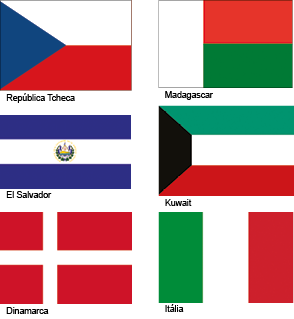
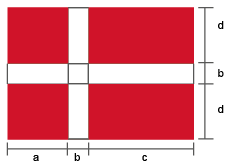
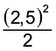
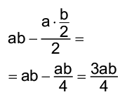
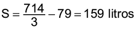
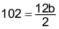
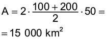
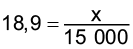

Introdução à unidade
Nesta unidade, retomamos o estudo da área das figuras planas e do volume do cubo, do paralelepípedo e de outros sólidos geométricos, utilizando-se monômios e polinômios como unidades de medidas.
Na unidade anterior, já utilizamos figuras geométricas como suporte para o estudo de monômios e polinômios. Nesta unidade faremos uma retomada e um aprofundamento sobre estes conceitos.
A seguir, relacionamos os objetivos que se pretende atingir ao estudar os conceitos desta unidade.
Capítulo 1 – Cálculo da área de figuras planas
Objetivos:
- Calcular a área de regiões planas por meio de figuras geométricas cujas fórmulas são conhecidas, como o quadrado, o retângulo, o paralelogramo, o triângulo, o trapézio e o losango.
- Representar a área de uma região plana por meio de polinômios.
Capítulo 2 – Cálculo do volume de sólidos geométricos
Objetivos:
- Calcular o volume de sólidos geométricos, como cubo e paralelepípedo.
- Representar o volume de sólidos geométricos por meio de polinômios.
Probabilidade e estatística –Variáveis em pesquisas
Objetivo:
- Identificar os tipos de variáveis em uma pesquisa.
Orientações específicas
A unidade inicia com uma referência à geometria urbana. Como sugestão de atividade, solicite aos alunos que pesquisem sobre os monumentos existentes na cidade onde moram que lembrem formas geométricas. Ou, se preferir, peça que recortem de revistas e jornais imagens de monumentos e identifiquem formas geométricas a que estes se assemelham. Os alunos poderão se organizar em grupos para confeccionar painéis com o resultado da pesquisa. Cada grupo poderá apresentar para a turma o trabalho desenvolvido e informar as conclusões a que chegaram.
Para um aprofundamento sobre o tema desenvolvido na unidade, você pode apresentar um vídeo aos alunos: Quadrado, cubo e cia, da série Mão na Forma. Você pode acessá-lo no link: https://cutt.ly/3JLtIj7.
Sinopse: Para observar as formas geométricas, basta andar um pouco por qualquer cidade em que você esteja. O vídeo segue pela cidade mostrando de que forma o cubo e o quadrado se encaixam nas construções e prova que, mesmo sendo considerados instáveis na natureza, eles são comuns na arquitetura. Por isso, o quadro “Vamos fazer?” ensina como o aluno pode montar um cubo.

Converse
Atividade 1
Pode-se dizer que ele é formado por paralelepípedos.
Atividade 2
Podemos identificar triângulos, agrupando-se dois triângulos temos losangos, agrupando-se três triângulos podemos ter trapézios, agrupando-se 4 triângulos podemos ter paralelogramos e agrupando-se 6 triângulos podemos ter hexágonos.
Atividade 3
Explore com os alunos as formas das construções existentes em sua cidade, como edifícios, monumentos e museus. Se possível, fotografe essas construções e mostre as imagens em sala de aula, para que possam ser analisadas de acordo com suas características.
|
Principais habilidades da BNCC |
EF08MA06, EF08MA19 |
|
Competências |
CE8, CG1, CG7, CG9 |
No início deste capítulo, propõem-se a construção de algumas figuras geómetricas feitas com o auxílio do compasso, para que os alunos percebam que é possível construir figuras planas com áreas diferentes utilizando a mesma medida de perímetro. Para isso, é apresentada a intuição geométrica das abelhas, uma situação real da natureza em que se pode perceber o uso da geometria. Além desse trabalho geométrico, proponha aos alunos uma pesquisa sobre os benefícios do mel e de uma alimentação saudável.
Durante o capítulo serão exploradas várias figuras geométricas planas. O objetivo é possibilitar que os alunos relembrem conceitos já estudados sobre áreas, podendo aplicá-los com os estudos dos polinômios.
Sugestão de atividade
Após as atividades propostas no livro, solicite aos alunos que pesquisem sobre algumas bandeiras que representam os países. Os símbolos e as cores utilizadas têm vários significados que, geralmente, estão associados à história, às lendas e às tradições, aos povos que o formaram, à quantidade de estados que o compõem, a algum tipo de aliança racial, a um caráter religioso, às línguas faladas no país, etc. Essa atividade, além de oferecer aos alunos a oportunidade de conhecer um pouco do significado dessas bandeiras, permite trabalhar com expressões algébricas. Para isso, solicite que representem a quantidade de tecido de cada cor utilizada e a quantidade total de tecido usada para confeccionar cada bandeira. Para iniciar esse trabalho, peça aos alunos que escolham de duas a quatro bandeiras compostas somente por polígonos. Observe alguns exemplos:

Todas essas bandeiras são quadriláteros. Observe como representar suas medidas por meio de monômios:

Tecido verde: a ∙ b
Tecido branco: a ∙ b
Tecido vermelho: a ∙ b
Total de tecidos: 3ab

Tecido branco: ab + 2bd + b2 + bc
Tecido vermelho: 2ad + 2cd
Total de tecidos: ab + 2bd + b2 + bc + 2ad + 2cd

Tecido verde: 
Tecido branco: bc
Tecido vermelho: 
Tecido preto: 
Total de tecidos: (a + b) ∙ 3c = 3ac + 3bc
O cálculo da quantidade total de tecido pode ser realizado adicionando-se as quantidades de tecido de cada cor ou calculando-se a área da região retangular da bandeira. Os alunos podem apresentar outras formas para representar as medidas.

Atividade 1
- Aproximadamente 6,8 cm e 5,9 cm. Como as medidas dependem da medição dos alunos e de como eles construíram a figura, poderão ocorrer diferenças milimétricas. Nesse caso, pode-se trabalhar com um valor aproximado. O importante é os alunos perceberem, mais adiante, que a área do hexágono e a do retângulo são iguais e que a área do quadrado, o qual será formado posteriormente, com o mesmo perímetro, é menor que a do hexágono.
- Sim.
- 40,12 cm2.
- 6 cm e 36 cm2.
- A área do hexágono é maior que a do quadrado, ou seja, com a mesma quantidade de recursos disponíveis, se o alvéolo for hexagonal, haverá um maior armazenamento de mel.

Situação 3
Comente com os alunos que a construção de triângulo é muito utilizada por diversos motivos, pois com ele é possível cobrir uma área com maior facilidade e possui a propriedade da rigidez. Podemos encontrar triângulos em construção de armações de telhados de madeira e estruturas metálicas, em objetos de uso diário e até nas artes plásticas.

Encontre soluções
Atividade 1
- Vermelho: 128 cm2;
roxo: 32 cm2;
rosa: 8 cm2. - A = 18 ∙ 21 − (128 + 32 + 8) = = 378 − 168 = 210 cm2
Atividade 2
- bc + 2c + 2ac + 2ab + 4a
- 8a + 2b + 2c + 4
- 8 ∙ 6 + 2 ∙ 6 + 2 ∙ 4 ∙ 6 + 2 ∙ 4 ∙ 8 + 4 ∙ 4 = 188 cm2
8 ∙ 4 + 2 ∙ 8 + 2 ∙ 6 + 4 = 64 cm
Atividade 3
- A = a ∙ a = a2
- A = x ∙ (x + 6) = x2 + 6x


Atividade 5
- (2x + 3) ∙ (y + 1) − 2 ∙ 2 =
= 2xy + 2x + 3y + 3 − 4 =
= 2xy + 3y + 2x − 1
- 2 ∙ 5 ∙ 3 + 2 ∙ 5 + 3 ∙ 3 − 1 =
= 48 cm2
Atividade 6
De acordo com os perímetros dos canteiros I, II e III, conclui-se que:
Diagonal de cada retângulo: 5 m.
Lado menor do retângulo: 3 m.
Lado maior do retângulo: 4 m.
- 68 m
- I: 120 m2; II: 144 m2; III: 96 m2 e IV: 96 m2.
- Canteiro II.
- Canteiros III e IV.
Atividade 7
(a + b)2 = (a + b) ∙ (a + b) =
= a2 + 2ab + b2
a2 + b2 + ab + ab =
= a2 + 2ab + b2
Atividade 8
- A figura é composta por um quadrado cujo lado mede x e um triângulo retângulo cuja base e altura medem y. Assim,
 .
. - 52 +
 = 25 + 6,125 =
= 25 + 6,125 =
= 31,125 cm2
(3,5)2 +  = 12,25 + 3,125 = = 15,375 cm2
- 3x + 2y
- 3 ∙ 5 + 2 ∙ 3,5 = 22 cm
3 ∙ 3,5 + 2 ∙ 2,5 = 15,5 cm
Atividade 9

Atividade 10
(y − 1)2 + y2 + (y + 1)2 =
= y2 − 2y + 1 + y2 + y2 + 2y + 1 =
= 3y2 + 2
Atividade 11
A região colorida equivale a 10 quadrados cujos lados medem x.
Portanto, a área da região colorida é igual a 10x2.
Atividade 12

- 5ab + b2 = 5 ∙ 2 ∙ 3 + 32 =
= 30 + 9 = 39 m2

|
Principais habilidades da BNCC |
EF08MA20, EF08MA21, EF08MA24 |
|
Competências |
CE6, CE7, CE8, CG9 |
No início do capítulo, na seção “Troca de ideias”, é proposta uma situação em que as medidas do aquário são dadas em centímetros e pede-se para calcular a capacidade, em litros. Estudamos no ano anterior que 1 dm3 corresponde a 1 litro. Assim, vamos calcular o volume do aquário multiplicando-se as medidas do comprimento, da largura e da altura entre si para então transformarmos em dm3.

V = c ∙ ℓ ∙ h, em que:
c: comprimento
ℓ: largura
h: altura
Calculando a capacidade do aquário temos:
V = 100 cm ∙ 40 cm ∙ 50 cm
V = 200 000 cm3
Como 1 dm3 = 1 litro, temos:
V = 200 000 cm3 = 200 dm3
A capacidade desse aquário é de 200 litros.
Durante o estudo sobre o volume de sólidos geométricos, proponha aos alunos que tragam embalagens com formato de cubos e paralelepípedos e representem as medidas delas por meio de monômios, calculando o volume de cada uma. As embalagens podem ser planificadas, sendo possível, ainda, calcular a área de cada uma das faces. Veja um exemplo a seguir.

Volume: a ∙ b ∙ c

Área das faces 1 e 3: ac
Área das faces 2 e 4: ab
Área das faces 5 e 6: bc
Área total: 2ab + 2ac + 2bc


Encontre soluções
Atividade 3
Área de cada face: x2; área total: 6x2 ∴ 6x2 = 384 ∴ x2 =
= 64 ∴ x = 8.
Temos uma equação do 2.º grau incompleta. Como esse assunto será estudado posteriormente, questione os alunos sobre os possíveis resultados e os números que, elevados ao quadrado, podem ter 64 como resultado. Nesse caso, poderão ser o 8 e o -8. Porém, como não existe medida negativa, somente o 8 serve como resposta.
V = 83 = 512 cm3
Atividade 5
1,2 m = 12 dm
85 cm = 8,5 dm
70 cm = 7 dm
V = 12 ∙ 8,5 ⋅ 7 = 714 dm3
Determinando quantos
litros sobraram:
.
Atividade 7
- V = a3
- V = a ∙ (a + 8) ∙ (a + 2)
V = a ∙ (a2 +10a + 16)
V = a3 + 10a2 + 16a
Atividade 8
Vsólido = Vparalelepípedo - 2Vcubo
Vsólido = 8x ∙ x ∙ 4x − 2x3
Vsólido = 32x3 − 2x3
Vsólido = 30x3


Atividade 10
7 ∙ (2x − 1)3 = 7 ∙ (2x − 1) ∙ (2x − 1)2 =
= 7 ∙ (2x − 1) ∙ (4x2 − 4x + 1) =
= 7 ∙ (8x3 − 8x2 + 2x − 4x2 + 4x − 1) = 7 ∙ (8x3 − 12x2 + 6x − 1) =
= 56x3 − 84x2 + 42x − 7
Atividade 11

Atividade 12
V = x ∙ x ∙ (2x + 10)
V = x2 ∙ (2x + 10)
V = 2x3 + 10x2
Atividade 13
Nesta atividade, convide alguns alunos para apresentar aos demais colegas os problemas elaborados e as respectivas soluções, socializando as estratégias desenvolvidas por eles.
Atividade 2
Inicialmente, é proposto aos alunos que construam um cubo medindo 10 cm x 10 cm x 10 cm, e com volume igual a 1 dm³. Para isso, converse com os alunos antecipadamente, para que separem todo o material que será necessário na realização do experimento. O experimento pode ser feito em duplas ou em grupos e, desta forma, eles podem se organizar para que no dia da atividade não falte nenhum material.
Durante a construção do cubo, pode-se passar a fita adesiva em suas arestas para reforçá-lo. No decorrer desta aula, oriente sempre que achar importante, acompanhe as discussões das duplas ou grupos e observe como eles se organizam para realizar o experimento e responder às questões propostas.


Probabilidade e estatística – Variáveis em pesquisas
Neste momento, converse com os alunos a respeito das informações que constam em pesquisas. Comente também sobre a importância de verificar a veracidade das informações que encontramos na internet, e questione se todas as informações publicadas na internet são confiáveis.
Encontre soluções
Atividade 2
V = 40 · 30 · 30 = 36 000 cm³
36 000 cm³ correspondem a 36 dm³.
Sendo assim, cabem 36 litros de água no aquário.
Atividade 3
40 · 20 · 30 = 24 000 cm³
24 000 cm³ correspondem a 24 dm³.
Se despejarmos 28 litros de água nessa caixa, a água irá transbordar, pois a sua capacidade é de 24 litros.
Neste momento, abordamos um tema muito relevante no meio empresarial que é a diferença salarial entre homens e mulheres e a diferença entre os níveis de escolaridade. Aproveite para promover uma discussão a respeito desse tema, comente com eles que a desigualdade salarial entre homens e mulheres que desempenham a mesma função não é um problema que ocorre só no Brasil. Segundo a ONU, a brecha salarial de gênero no mundo é de 16%, o que significa que as trabalhadoras ganham em média 84% do que ganham os homens.


Relembre
Atividade 1
A área verde representa um losango que corresponde à metade da área do retângulo. Portanto, a área verde é igual a 30 cm2.
Atividade 2
- Falsa. Perímetro = 24 cm
Perímetro do novo quadrado = 12 cm
O perímetro do novo quadrado tem 12 cm a menos que o perímetro do primeiro.
- Falsa. O perímetro do novo quadrado é a metade do perímetro do primeiro.
- Verdadeira.
Área do primeiro quadrado: 36 cm2
Área do novo quadrado:
9 cm2
9 é a quarta parte de 36.
- Falsa. A área do novo quadrado tem 27 cm2 a menos do que a área do primeiro.
Atividade 3
Perímetros das figuras:
I: 14 cm
II: 16 cm
III: 12 cm
IV: 12 cm
V: 10 cm
As regiões que têm perímetros iguais são as de números III e IV.
Atividade 4
Lado do quadrado X: 9 m
Lado do quadrado Y: 12 m
Determinando a medida da base do triângulo Z:

b = 17 m
Assim, o retângulo ABCD tem AD = 9 + 12 = 21 m e CD =
= 12 + 17 = 29 m.
A área de ABCD é 21 ∙ 29 = = 609 m2
Determinando a área da região W:
609 − 81 − 144 − 102 = 282 m2
Atividade 5
A figura apresenta dois trapézios congruentes.
Determinando a área da figura, tem-se:

Determinando a população x:

x = 283 500 habitantes
Atividade 7
2 ∙ (10 ∙ 20) + 2 ∙ (10 ∙ 40) + 2 ∙ (20 ∙ 40) = 2 ∙ 200 + 2 ∙ 400 + 2 ∙ 800 =
= 400 + 800 + 1 600 = 2 800 cm2
1 000 ∙ 2 800 cm2 = 2 800 000 cm2
2 800 000 cm2 = 280 m2
Atividade 8
V = 2 ∙ 2 ∙ 1 = 4 m3
4 m3 = 4 000 dm3 = 4 000 L
Atividade 9
A caixa montada tem as dimensões x, 10 − 2x e 20 − 2x.
Determinando o polinômio que representa o volume, tem-se:
x ∙ (10 − 2x) ∙ (20 − 2x) =
= x ∙ (200 − 20x − 40x + 4x2) =
= x ∙ (200 − 60x + 4x2) =
= 200x − 60x2 + 4x3
Atividade 10
V = 4 ∙ 6 ∙ 8 = 192 cm3
192 cm3 = 0,192 dm3 = 0,192 L =
= 192 mL
90% de 192 mL corresponde a 172,8 mL.
Atividade 11
Área total do cubo menor:
 de 162 cm2 = 54 cm2
de 162 cm2 = 54 cm2
6a2 = 54
a2 = 9
a = 3 cm
V = 33 = 27 cm3